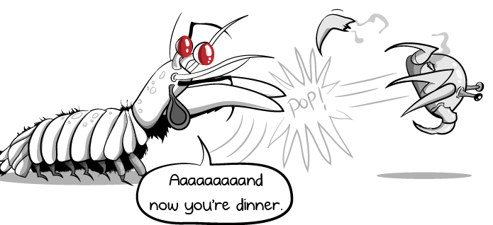

Stomatopoda: A poderosa barata alienígena do mar!
Odontodactylus scyllarus. ou para os mais íntimos,Stomatopoda é uma incrível espécie pertencente ao reino Animalia, filo Arthropoda, subfilo Crustacea, classe malacostraca, subclasse soplocarida e ordem Stomatopoda.
Esta criatura medonha, terrível e cruel possui incríveis atributos físicos
quando comparado a outras especies, conseguindo dar "socos" que tem potência similar a
disparos de armas de fogo e uma visão que deixa a do ser humano no chinelo!

Super Soco
Seu soco pode ser comparado ao tiro de uma arma calibre .22, e pode chegar a uma velocidade de 80km/h!
Multicor
Seus olhos possuem aproximadamente 5 vezes mais receptores de luz, permitindo que eles possam compor cores utilizando 16 tonalidaes (imagine as possibilidades)!
Defesa também é importante
E para completar, ele possui esta bela armadura (,apesar de ser um defensor
de que a melhor defesa, é um belo ataque)!